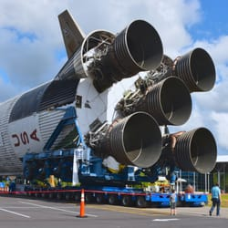
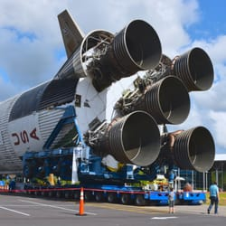
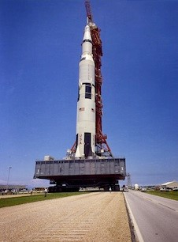

Saturn V stats
Height: 363 feet (111 meters) Max Diameter: 33’ (10m) Payloads: Apollo spacecraft and astronauts, Skylab Mass (fueled) 6,200,000 lbs. (2,800,000kg) Rated Liftoff Thrust First Stage (sea level) 7,500,000lbs (33MN) Actual: 7,891,000lbs (35.10MN) (Skylab) Max. Thrust (vacuum) first stage 9,200,000lbs (40.8 MN)
First Stage Performance
Burn Time: 161 sec. Velocity: 6164 mph (9924kph) Max G-Force: 4+ Altitude: 42 miles (68km)
The Space Shuttle developed a maximum of 7 million pounds of thrust, 22 seconds into its flight and then decreased from there. The Space Shuttle’s max payload to LEO was 53,600lbs (24,400kg).
It took 27 shuttle missions, plus additional Soyuz and Proton rockets, 12 years to assemble the 990,000lb (450,000kg) International Space Station. The same amount of payload by mass could be completed by 4 Saturn V launches with room to spare.
The Saturn V had five Aerojet Rocketdyne F-1 engines in its first stage, where each of them produced 1.5 million pounds of thrust and combined thrust (liftoff thrust) of 7.8 million pounds (3.5 million kg) compared to space shuttle, which produced 6.5 million pounds (28,900 kN) of thrust. Each F-1 rocket engine consumed 3 tons of propellant (kerosene and oxygen) per second. So, at lift off, the Saturn V’s first stage burned 15 tons of propellant per second.That fuel was delivered from the fuel and oxygen tanks directly forward of the engines.The Saturn V rocket’s first stage carried 203,400 gallons (770,000 litres) of kerosene fuel and 318,000 gallons (1.2 million litres) of liquid oxygen needed for combustion. At lift off, the stage’s five F-1 rocket engines ignite and produce 7.5 million pounds of thrust.
 

The Saturn V was a rocket NASA built to send people to the moon. (The V in the name is the Roman numeral five.) The Saturn V was a type of rocket called a Heavy Lift Vehicle. That means it was very powerful. It was the most powerful rocket that had ever flown successfully. The Saturn V was used in the Apollo program in the 1960s and 1970s. It also was used to launch the Skylab space station. As of 2022, the Saturn V remains the only launch vehicle to carry humans beyond low Earth orbit (LEO). The Saturn V rocket was 111 meters (363 feet) tall, about the height of a 36-story-tall building, and 18 meters (60 feet) taller than the Statue of Liberty. Fully fuelled for lift off, the Saturn V weighed 2.8 million kilograms (6.2 million pounds), the weight of about 400 elephants. The rocket generated 34.5 million newtons (7.6 million pounds) of thrust at launch, creating more power than 85 Hoover Dams. A car that gets 48 kilometres (30 miles) to the gallon could drive around the world around 800 times with the amount of fuel the Saturn V used for a lunar landing mission. It could launch about 118,000 kilograms (130 tons) into Earth orbit. That's about as much weight as 10 school buses. The Saturn V could launch about 43,500 kilograms (50 tons) to the moon. That's about the same as four school buses. The Saturn V was developed at NASA's Marshall Space Flight Center in Huntsville, Ala. It was one of three types of Saturn rockets NASA built. Two smaller rockets, the Saturn I (1) and IB (1b), were used to launch humans into Earth orbit. The Saturn V sent them beyond Earth orbit to the moon. The first Saturn V was launched in 1967. It was called Apollo 4. Apollo 6 followed in 1968. Both of these rockets were launched without crews. These launches tested the Saturn V rocket. The first Saturn V launched with a crew was Apollo 8. On this mission, astronauts orbited the moon but did not land. On Apollo 9, the crew tested the Apollo moon Lander by flying it in Earth orbit without landing. On Apollo 10, the Saturn V launched the lunar Lander to the moon. The crew tested the Lander in space but did not land it on the moon. In 1969, Apollo 11 was the first mission to land astronauts on the moon. Saturn V rockets also made it possible for astronauts to land on the moon on Apollo 12, 14, 15, 16 and 17. On Apollo 13, the Saturn V lifted the crew into space, but a problem prevented them from being able to land on the moon. That problem was not with the Saturn V, but with the Apollo spacecraft. The last Saturn V was launched in 1973, without a crew. It was used to launch the Skylab space station into Earth orbit. Ground-level view of the 363-ft. tall Apollo 11 Saturn V on the NASA'S Crawler-transporter way on May 20, 1969